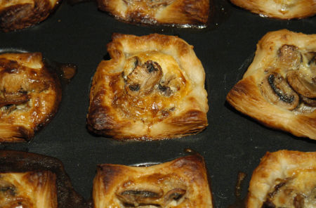

| Zutaten für 4 Personen: | |
| 400 g | Kuchen- oder Blätterteig |
| 500 g | Champignons |
| 2 dl | Rahm |
| 3 | Eier |
| Salz | |
| Pfeffer | |
| Muskat | |
| Paprika | |
| Butter | |
Die Champignons säubern und in Scheiben schneiden.
Den Guss vorbereiten: Eier und Rahm verklopfen, mit Salz, Muskat und Paprika würzen.
8-12 Förmchen mit Butter ausstreichen und mit Teig belegen. Einstechen.
Champignons in heisser Butter kurz dämpfen. Mit Salz und Pfeffer würzen. Flüssigkeit einkochen lassen.
Die Champignons in die Förmchen verteilen. Guss über die Pilze giessen.
Im vorgeheizten Ofen bei guter Hitze (220°C) ca. 30 Minuten backen.
Heiss oder warm servieren, zusammen mit grünem Salat.
Variante: Mit den Champignons Zwiebeln oder Lauchringe mitdämpfen.
Sehr gut, 11.2.2004
@LINKBACK_TAG@ @WAKELOCK@